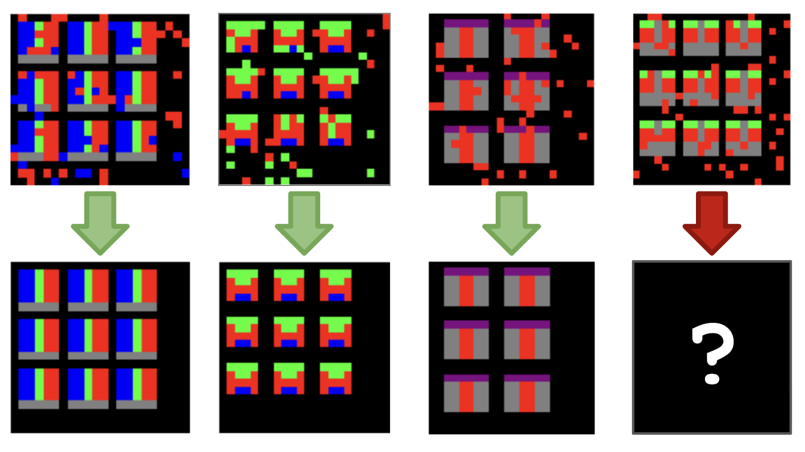

Overview
In this website, we introduce the core ideas behind in-context learning and provide interactive demos (hosted on Google Colab) that let you experiment with ICL step by step.
In-Context Learning (ICL) is a method that enables large language models (LLMs) to perform new tasks without changing any of their internal parameters. Instead of retraining or fine-tuning, we simply provide instructions and examples directly in the prompt. The model interprets these demonstrations, detects the underlying patterns, and applies them to new inputs in real time. One way to think of ICL as “learning by showing.” When we supply a few sample input–output pairs, the model analyzes how the inputs were transformed and what rules seem to govern them. It then extends the same pattern to new queries—whether the task is rewriting text, extracting information, classifying sentiment, or solving a reasoning problem. Much like a child copying a block-stacking pattern after watching a few examples, the model uses its pre-training to generalize from the demonstrations we provide.
Since ICL requires no training pipeline, it’s flexible, efficient, and ideal for rapid experimentation. This is what allows modern LLMs to shift seamlessly between tasks—classification, translation, summarization, reasoning—based solely on the context they are given.
Demos
Explore a collection of interactive dmoes that show how LLMs can learn patterns, make predictions, classify data, tune controllers, and even perform reinforcement learning — all without retraining, using only In-Context Learning.
Below is a list of all available demos, categorized by color:
- Sequence/Pattern Learning | - Prediction & Regression | - Classification | - Reinforcement Learning & Numerical Optimization using ICL
Pattern Completion
Abstract and Reasoning Corpus Numerical Pattern Completion
Movie Translation
Fictional Movie Language Translation (Avatar, LotR, Star Trek, GoT)
remove content below
Demos (old) placeholders
Sequence Prediction
This demo is inspired by Large Language Models as General Pattern Machines [2], which explores how Large Language Models (LLMs) can identify and generalize both visual and abstract patterns.
In this demo, we’re going to test how well an LLM can recognize and extend mathematical patterns, specifically those derived from the sine function. We can start by creating a set of numerical sequences based on the sine function — specifically a⋅x⋅sin(bx) and a⋅sin(bx). For each function, we will generate 10 example sequences using x-values uniformly sampled from the range [0, π].
Next, let’s feed these sequences into the Gemini 2.5-Flash model. We’ll disable reasoning mode so the model focuses purely on continuing numerical patterns rather than performing abstract reasoning. Along with the training examples, we will also include a custom test sequence that goes slightly beyond the π interval. This helps test whether the model can continue the sine-like behavior even outside the range it was “trained” on, without the context or equation of the true sine function.
Finally, we can ask the model to generate 50, 100, or 200 additional values that continue the test sequence naturally. These steps and results demonstrate how the LLM can recognize, generalize, and extend sinusoidal patterns learned from the provided examples.
Prompt Example
You are given several example sequences of (x, y) pairs generated by different mathematical patterns.
Example 1: [(0.0, 0.0), (0.025, 0.199), (0.05, 0.389), ...]
Example 2: [(0.0, 0.0), (0.025, 0.397), (0.05, 0.779), ...]
Example 3: [(0.0, 0.0), (0.025, 0.596), (0.05, 1.168), ...]
Example 4: [(0.0, 0.0), (0.025, 0.795), (0.05, 1.558), ...]
Example 5: [(0.0, 0.0), (0.025, 0.993), (0.05, 1.947), ...]
Example 6: [(0.0, 0.0), (0.025, 1.192), (0.05, 2.337), ...]
...
The following sequence represents a partial test input: {test}
Now generate the next 200 new (x, y) pairs that follow the same underlying mathematical pattern, continuing naturally from where the test sequence ends.
Output a Python list of [x, y] pairs in this format, remember to close all brackets correctly:
[(x1, y1), (x2, y2), (x3, y3), (x4, y4), (x5, y5), ...]
No explanations, no code, no comments — only the list.
Example of Demo
.gif)
For the function a⋅x⋅sin(bx), the initial example we provide to the model is shown by the gray curve, which represents the known part of the sequence. We then ask the model to predict the next 50, 100, or 200 values beyond the known range—shown by the red curve. The dashed gray curve represents the ground-truth continuation of the pattern.
.gif)
For the function a⋅sin(bx), the initial example we provide to the model is shown by the gray curve, which represents the known part of the sequence. We then ask the model to predict the next 50, 100, or 200 values beyond the known range—shown by the red curve. The dashed gray curve represents the ground-truth continuation of the pattern.
In the demo, you can adjust the frequency and amplitude settings when prompted, allowing you to see how the LLM interprets the underlying mathematical pattern and predicts future values based on the provided examples.
Glucose Level Prediction
In this demo, we utilize a collection of full daily time-series sequences—each containing paired glucose measurements and meal logs—as the “training” examples for our Large Language Model (LLM). These sequences capture the natural dependencies between meals and the resulting glucose responses, giving the model a rich foundation to learn from.
Next, we run two prediction tasks: one with explicit Glycemic Index (GI) information and one without it. In both cases, the underlying sequence data stays the same; what changes is the prompt. For the GI-aware version, we augment the prompt with instructions telling the model to consider GI values when predicting future glucose levels. For the GI-agnostic version, we simply remove that guidance.
For both tasks, we feed the daily sequences and step-by-step context into the Gemini 2.0 Flash model. We keep reasoning mode turned off so the model focuses on direct pattern continuation rather than higher-level interpretation. Alongside the training examples, we also provide a test sequence representing a future day we want the model to predict.
To generate the full set of predictions for this target day, we ask the model to produce one value at a time, looping sequentially until the entire day's glucose curve is completed. This lets us evaluate how well the model can recognize, generalize, and extend the patterns it learned from the earlier sequences—both with and without GI guidance.
Finally, we compare the LLM’s output to a Baseline Model (Gaussian Process Regression) and evaluate performance using Root Mean Squared Error (RMSE) and Mean Squared Error (MSE).
Prompt Example
You are the world's best glucose level predictor for adults.
Here is an example of my glucose level data for 20-11-2023:
Date Time Blood Sugar Level
20-11-2023 10:00 AM 89
20-11-2023 10:50 AM 100
20-11-2023 12:38 AM 91
20-11-2023 1:40 PM 93
20-11-2023 3:03 PM 111
20-11-2023 3:37 PM 122
20-11-2023 4:12 PM 116
20-11-2023 6:15 PM 101
20-11-2023 7:27 PM 126
20-11-2023 9:27 PM 118
20-11-2023 9:49 PM 120
20-11-2023 10:26 PM 123
20-11-2023 10:47 PM 121
20-11-2023 11:47 PM 115
and examples of the food I consumed at the time:
Date Time Meal Type Food Items
20-11-2023 10:08 AM Breakfast Poha (150 gm), Tea (100 ml)
20-11-2023 1:53 PM Lunch Roti (4 pc), Baingan ...
20-11-2023 6:27 PM Snacks Samosa Chaat, Coca Cola ...
20-11-2023 8:47 PM Dinner Ghee Roti (3 pc) ...
My last glucose level was 118 at 6:24 PM
I just ate Popcorn, Potato Chips, Pepsi at 6:32 PM for Snacks on 23-11-2023, using the glycemic index, predict my glucose level at 8:02 PM
or
My last glucose level was 135 at 8:02 PM
I ate Popcorn, Potato Chips, Pepsi previously at 6:32 PM for Snacks on 16-11-2023, using the meal, predict my glucose level at 9:32 PM
*Note: I am not diabetic.
Output only a Python list with a single dictionary in this format:
[{{'Date': '{target_date}', 'Time': '{t}', 'Blood Sugar Level': value}}]
No extra text, no explanations, no code, only the list.
Example of Demo

By incorporating the Glycemic Index, we guide Gemini-2.0-Flash to use the provided examples, the test sequence, and the associated food data to iteratively predict the patient’s glucose level at each subsequent time point. The model continues this step-by-step prediction process until it reaches the end of the day.

By excluding the Glycemic Index, we prompt Gemini-2.0-Flash to rely solely on the provided examples, the test sequence, and the food data to iteratively predict the patient’s glucose level at each subsequent time point. The model continues this step-by-step prediction process until it reaches the end of the day.

For the Baseline Gaussian Process Regression (GPR) model, we generate predictions using only the training data, which consist of the patient’s glucose measurements. The model then forecasts glucose levels throughout the day at predefined time points.
In the demo, you can select the number of days to include as examples in the demo, and explore how LLMs leverage food-related data, in combination with semantic cues, to predict future values in time-dependent datasets based on the provided examples.
References
[1] Chollet, F. (2019). On the Measure of Intelligence. arXiv preprint arXiv:1911.01547. https://arxiv.org/abs/1911.01547
[2] Mirchandani, S., Xia, F., Florence, P., Ichter, B., Driess, D., Arenas, M. G., Rao, K., Sadigh, D., & Zeng, A. (2023). Large Language Models as General Pattern Machines. arXiv preprint arXiv:2307.04721. https://arxiv.org/abs/2307.04721